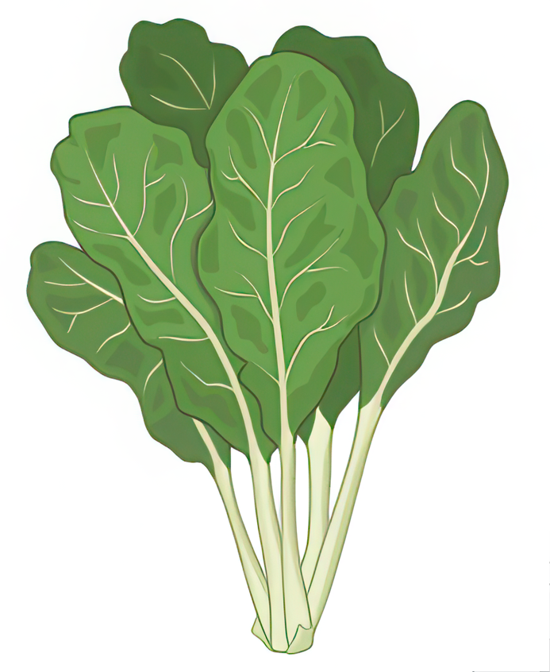
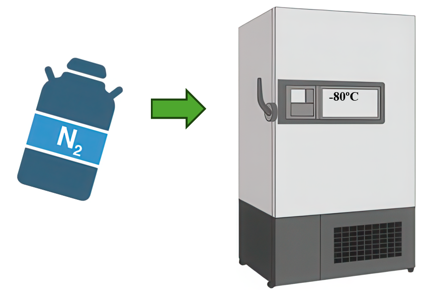

Instructions
Re-Do the Experiment
Click on the button "Select plant" to display plant.
Click on the button "Select plant tissue" to display a leaf.
Click on the checkboxes and click on the button "Select Growth Conditions"
Click on the checkbox "Understanding Carbon flux of photosynthesis" to define the goal of the experiment.
Next from the dropdown select isotope for labelling.
Click on the dropdown and select labelling duration.
Click on the button "Grow plant in controlled conditions as decided".
Click on the button "Introduce
13
C labelled
13
C0
2
in the chamber.
Click on the button "Harvest tissue sampled at specific time points".
Click on the button "Instantly freeze tisse samples using liquid N
2
and store in -80
o
C.
Click on the button "Extract metabolities from frozen samples".
Click on the button "Identify and quantify metabolities using GC-MS, HPLC, LC-MS, etc".
Click on the button "Generate metabolic pathway model for flux analysis".
CLick on the button "Use softwares like 13CFLUX2, OpenFLUX, or Metran to analyse metabolic flux data".
Select a plant
Select plant tissue
Select Growth Conditions
6000 Lux (16:8 hrs)
25
o
C Temperature
50% CO
2
supply
70% Relative Humidity
Define experiment goal
Understanding Carbon flux of photosynthesis
Select Isotope Labelling
13
C
12
C
14
C
Select Labelling Duration
Long term labelling for steady state MFA
Short term labelling for steady state MFA
Long term labelling for infinite state MFA
Grow plant in controlled conditions as decided
Introduce
13
C labelled
13
CO
2
in the chamber
Harvest tissue sampled at specific time points
Instantly freeze tissue samples using Liquid N
2
and store in -80
o
C
Extract metabolities from frozen samples
Identify and quantify metabolities using GC-MS,HPLC,LC-MS, etc
Generate metabolic pathway model for flux analysis
Use softwares like 13CFLUX2, OpenFLUX, or Metran to analyse metabolic flux data

